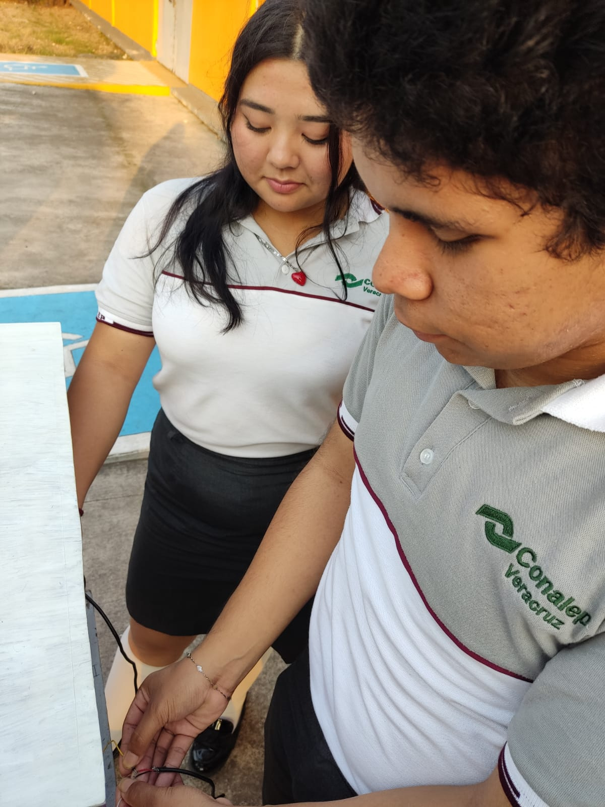
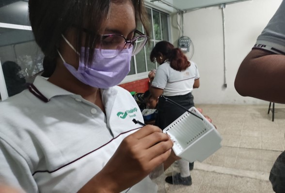

Proposito
Este proyecto tiene la finalidad de ayudar al medio ambiente principalmente por los problemas que se están teniendo en estos últimos años por la falta de plantas y comida. Este proyecto ayudará para que se puedan automatizar la crezca de plantas y vegetación para una rápida producción de alimentos (En el CONALEP VERACRUZ II).



